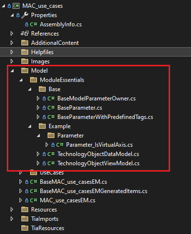
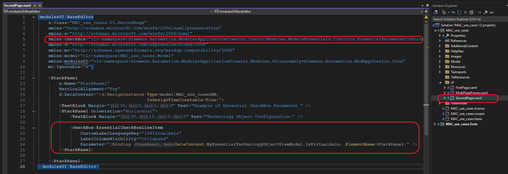

- Generated by
 1.8.14
1.8.14
|
ModularApplicationCreatorUseCaseBasedDocumentation
|
The Module Essentials is a control module designed to streamline the development process. It serves as a NuGet package that helps developers quickly build user interfaces and efficiently manage dependencies between UI controls.
To use the Module Essentials in your project:
Install the NuGet package: "Siemens.ModularApplicationCreator.ControlModules.ModuleEssentials"
https://www.nuget.org/packages/Siemens.ModularApplicationCreator.ControlModules.ModuleEssentials
To effectively use Module Essentials, you must understand the underlying architecture of the module. Each Data Model is essentially a data container that holds multiple parameters. The model provides a parameter register, where developers can add each parameter as needed based on their specific requirements. For example, if you have an "axis" with various settings, the axis serves as your model, and each individual setting parameter must be properly defined and registered within that model. This architecture allows for flexible and organized management of related parameters within a cohesive data structure.
Velocity must have a corresponding class defined for it, typically inheriting from the BaseParameter class. BaseParameter. BaseParameter as the base class. Here is an example of the classes needed to use the Module Essentials:

To use parameters as UI controls in your application, you must bind them to the corresponding controls in the XAML file. This binding establishes the connection between your parameter classes and the visual elements in the user interface, enabling data flow and user interaction. The binding process typically involves setting the DataContext or using specific binding expressions that reference your parameter properties.

1.8.14